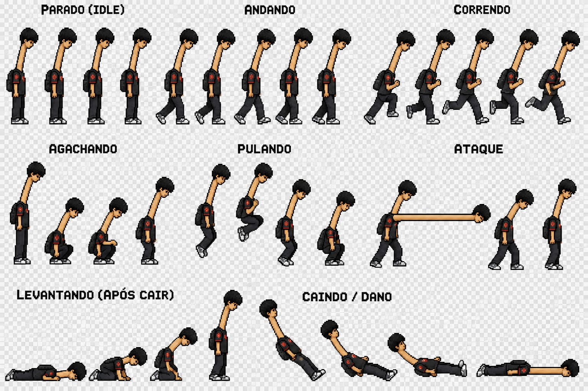
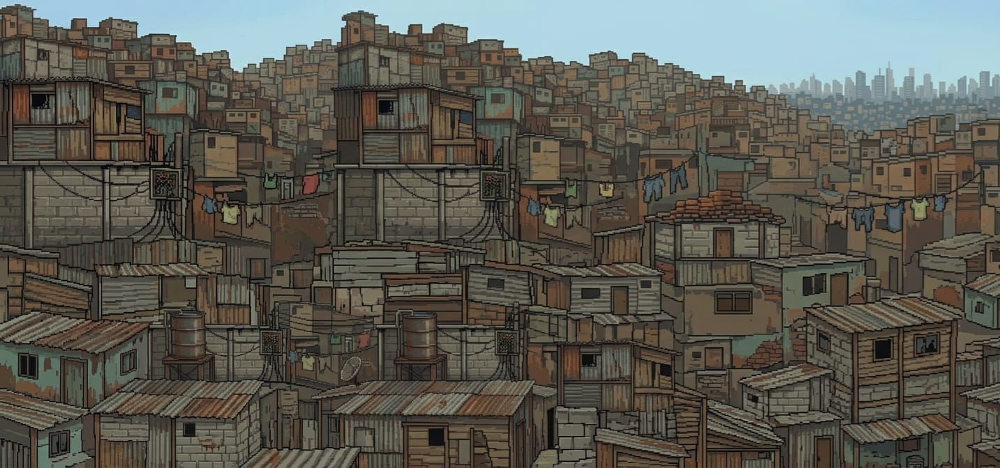
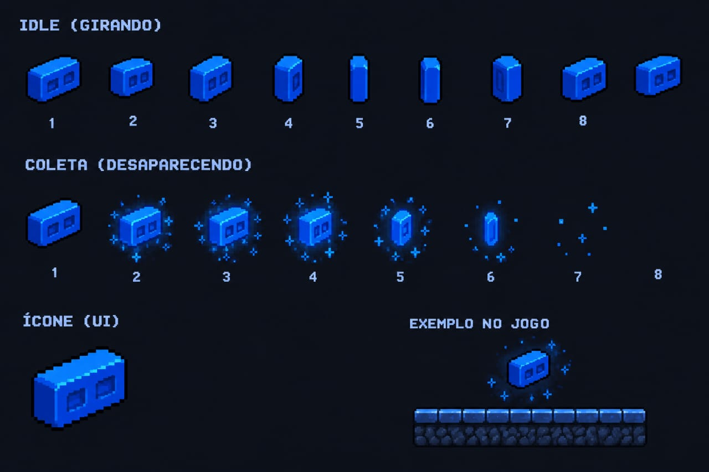
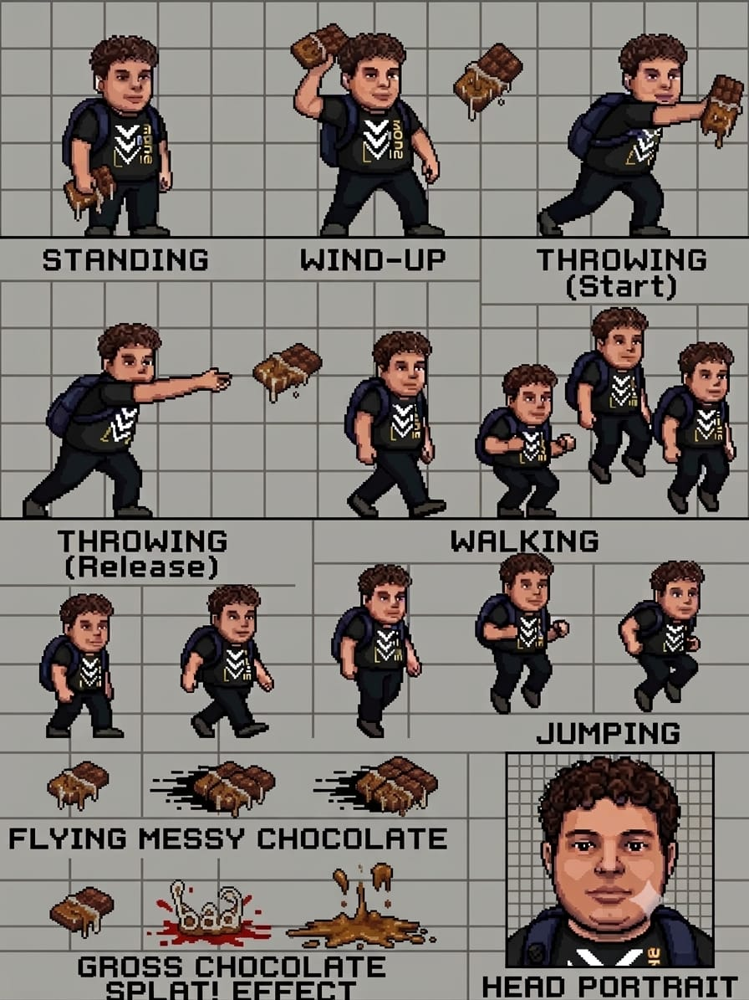
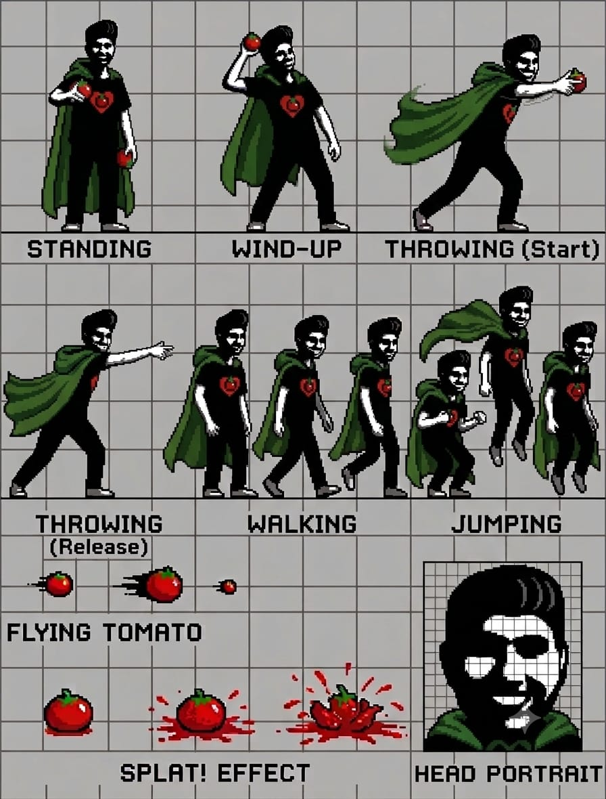

História
Há muitos anos, o Bairro do 120 era um lugar comum. Até que, numa noite conhecida como A Grande Queda, centenas de misteriosos Tijolos Azuis caíram do céu.
Esses tijolos não eram comuns: eles continham uma energia capaz de alterar a realidade.
Quem descobriu isso primeiro foi O Homem Pescoçudo, um sujeito aparentemente normal, exceto pelo pequeno detalhe de possuir um pescoço inexplicavelmente gigantesco.

Ninguém sabe por quê.Nem ele.Mas existe uma antiga profecia:"Quando o pescoço alcançar o horizonte, o escolhido reunirá os tijolos azuis e enfrentará aquele que veste o verde."
O objetivo
O Homem Pescoçudo precisa atravessar diferentes regiões do Bairro do 120 e coletar os 120 Tijolos Azuis.

Cada tijolo possui uma parte da energia necessária para abrir o Portal do 120, localizado no centro do bairro.

Só que o bairro está cheio de desafios:
quebra-cabeças
obstáculos
plataformas
tijolos azuis escondidos
Minions do Molho, criaturas enviadas para impedir o herói.
O CHOCOLATE BABA

Os Minions disparam rajadas de chocolate extremamente pegajoso.
Se o Homem Pescoçudo for atingido, fica temporariamente preso e precisa balançar o pescoço para escapar.
Sim. O pescoço é uma mecânica de gameplay.
A SOMBRA VERDE
Uma figura misteriosa usando uma enorme capa verde.

Ela possui a capacidade de lançar tomates energizados que perseguem o jogador.
Mas existe uma revelação:
A Sombra Verde também é um Homem Pescoçudo.
Só que seu pescoço foi corrompido pela energia dos Tijolos Azuis.